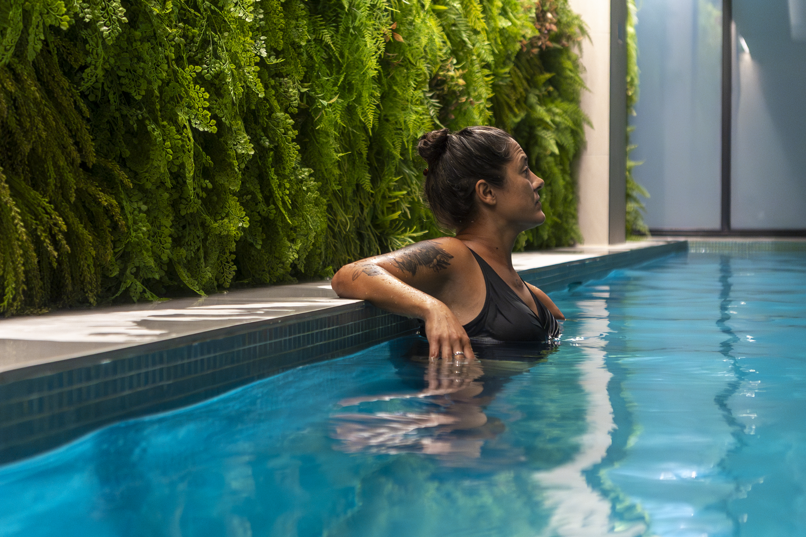
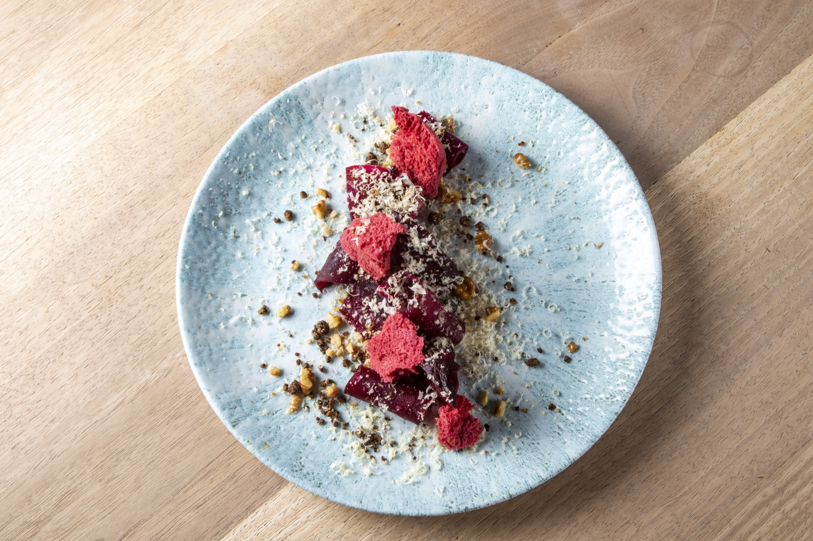
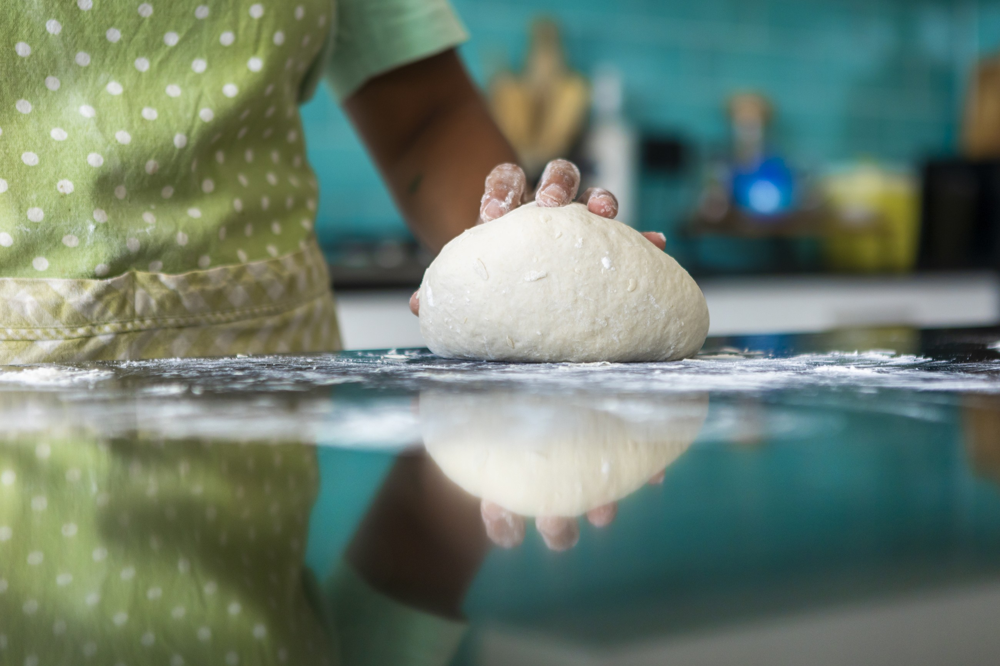

El espacio y la estancia
Habitaciones, diseño, descanso y servicios, fotografiados con una mirada que ayude a imaginar la estancia.

UNA PROPUESTA PARA VINCCI HOTELES · FITUR 2027
Fotografía y vídeo para mostrar lo que se vive dentro del hotel y todo lo que comienza al salir de él.
Descubrir la propuestaLA OPORTUNIDAD
Vincci Local Experts conecta la estancia con la gastronomía, la cultura y las experiencias de cada destino. Propongo crear fotografías y vídeo que ayuden a contar esa relación en los hoteles que vuestro equipo quiera impulsar.
La idea es mostrar una estancia completa: la llegada, los espacios, la mesa, el equipo y las experiencias cercanas que hacen diferente cada hotel.

PROPUESTA DE PRODUCCIÓN
Podemos empezar con Vincci Consulado de Bilbao: trabajo desde Bilbao, por lo que puedo organizar una producción cercana con mi equipo. Junto a vuestro personal elegiríamos qué espacios y experiencias mostrar.
La misma idea puede adaptarse después a otros establecimientos y destinos, respetando el carácter de cada uno.
QUÉ PODEMOS CREAR
La selección y el alcance se acuerdan según los objetivos de cada hotel.
Habitaciones, diseño, descanso y servicios, fotografiados con una mirada que ayude a imaginar la estancia.
Restaurantes, gastronomía y equipos: imágenes que enseñen la experiencia más allá del plato.
Actividades y lugares elegidos junto a Vincci para comunicar lo que el viajero puede vivir alrededor del hotel.
Las fotografías son ejemplos del archivo de Juan Aizpuru; la producción para Vincci se realizaría en los establecimientos seleccionados.

UNA COLABORACIÓN FLEXIBLE
Entregamos fotografía y vídeo terminados para que vuestro equipo o agencia los utilice en su comunicación. Si lo preferís, podemos desarrollar y producir la campaña completa con vosotros.
Definiremos los hoteles, tiempos, materiales y licencia de uso según las necesidades del proyecto. Trabajamos con equipo profesional y colaboradores locales.
Ver mi trabajoHABLEMOS EN FITUR
Me gustaría conocer qué hoteles y experiencias queréis impulsar y estudiar cómo podemos colaborar.
Contactar con Juan